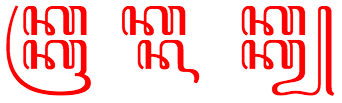
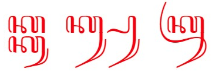

This page provides basic information about the Javanese script. It is not authoritative, peer-reviewed information – these are just notes I have gathered or copied from various places as i learned. For character-specific details follow the links to the Javanese character notes.
Clicking on red text examples, or highlighting part of the sample text shows a list of characters, with links to more details. Click on the vertical blue bar (bottom right) to change font settings for the sample text.
Note: There are currently difficulties in finding a workable Unicode font for Javanese. The Noto Sans Javanese font uses shapes that are over-simplified for some Javanese users, and the often recommended font, Tuladha Jejeg, is based on Graphite technology, and so only works on Firefox with Graphite rendering enabled. The default webfont for this page is the Noto font, but if you are using Firefox with Graphite enabled and download and install the Tuladha Jejeg font, you can switch to that font using the vertical blue bar, bottom right. (An attempt to package the Tuladha Jejeg font as a webfont was unsuccessful, as the rendering wasn't properly supported in that format.)
Note: ZWSP has been added between orthographic syllables in the above text in order to allow the text to wrap. The major browsers don't wrap it automatically.
Javanese is Indonesia's oldest literary language, its literary history being traceable to the C4th. Since that time, it has been written in several different scripts - Pallava, Old Javanese, and an Arabic variant known as gundil script - before arriving at its present form in the C17th and 18th. The present Javanese script is a modern variant of Old Kawi, an ancient Brahmic script from which many scripts in the Indonesian archipelago are derived. It is the pre-colonial script of the Javanese language spoken on the Indonesian islands of Java and Bali and is used to write the Tengger and Osing languages, also spoken in Java and Bali. Historically it was also used to write the Bali language, which is now written largely in the Latin and Balinese scripts, and the Sunda language, which is now written in the Latin and Arabic scripts. The Javanese script is closely related to the Balinese script, although Javanese contains 4 consonant letters which are absent in the Balinese. ...
The first Javanese upright-style font was produced in the 1830s by the Dutch. Early in the C20th, two other cursive type fonts were also produced. Further development was halted abruptly during the second World War when the use of the Javanese script was prohibited under the Japanese occupation. Currently, there are no newspapers or magazines being printed in the Javanese script, although it is still taught in most elementary schools and some junior high schools in Javanese speaking areas.
The Javanese script, natively known as Aksara Jawa (ꦲꦏ꧀ꦱꦫꦗꦮ) and Hanacaraka (ꦲꦤꦕꦫꦏ), is an abugida developed by the Javanese people to write several Austronesian languages spoken in Indonesia, primarily the Javanese language and an early form of Javanese called Kawi, as well as Sanskrit, an Indo-Aryan language used as a sacred language throughout Asia. The Javanese script is a descendant of the Brahmi script and therefore has many similarities with the modern scripts of South India and Southeast Asia. The Javanese script, along with the Balinese script, is considered the most elaborate and ornate among Brahmic scripts of Southeast Asia.
The script was widely used by the court scribes of Java and the Lesser Sunda Islands. Numerous efforts to standardize the script were made in the late 19th to early 20th-century, with the invention of the script's first metal type and the development of concise orthographic guidelines. However, further development was halted abruptly following World War II and especially during the Japanese occupation of the Dutch East Indies, in which its use was prohibited, and the script's use has since declined. Today, everyday use of the Javanese script has been largely supplanted by the Latin alphabet.
Javanese is an abugida, ie. consonants carry an inherent vowel sound that is overridden, where needed, using vowel signs. In Javanese, consonants carry an inherent vowel, which can be a or o. See the table to the right for a brief overview of features, taken from the Script Comparison Table.
Character lists
The Javanese script characters in Unicode 10.0 are in a single block:
The following links give information about characters used for languages associated with this script. The numbers in parentheses are for non-ASCII characters.
Javanese(42 letters, 13 marks, 13 punctuation : total 68)
The initial consonant cluster may represent a word-initial cluster such as mb, nd, ndh, nj or nng,c eg. ꦩꦧꦸꦫꦸmburuhunting, or it may represent the final consonant of a preceding syllable and the initial consonant of another, eg. ꦲꦏ꧀ꦱꦫaksaracharacters.
Root words are typically disyllables of the form Cˡ V Cˡ V Cˡ, where Cˡ represents an optional consonant or consonant cluster, and V represents a vowel. Most commonly, this represents CVCVC, followed by CVCCVC.c
Murda forms can be viewed as a kind of capital letter for proper nouns (not sentence initial letters), used as honorifics. They are used to replace an ordinary letter form in the first syllable of the name. However, not all letters have a murda form, so if there is no letter in the first syllable that has a murda form, one is used for the next syllable in the name that has one.
Highly respected names may be all 'capitalized' if the corresponding murda are available.
Mahaprana forms were originally aspirated consonants used in Sanskrit and Kawi transliterations (mahaprana means aspirated). They are rarely, if ever, found in modern text.
These three characters are treated as vowels in other scripts, such as Balinese, but as consonants in Javanese. They represent the sounds rə, lə and lɤ, rather than a consonant plus inherent vowel, and take no vowel signs, eg. ꦊꦩꦃꦊꦩ꧀ꦧꦸꦠ꧀lemah lembutgentle.d They do, however, have conjoint forms.
The absence of a vowel sound after a letter (ie. not involving medial or final consonant diacritics) is shown visually in the script in one of several ways:
Some letter pairs with no intervening vowel remain side-by-side but alter their glyph shapes (we will refer to these pairs as conjoined).
Other letter pairs are stacked, and typically also involve glyph changes (we will refer to these pairs as stacked, or the second letter as subjoined).
Since words are not separated by spaces, this process also works across word boundaries.
In Unicode text, the catalyst for producing conjoined or subjoined clusters is the inclusion of an invisible ◌꧀ [U+A9C0 JAVANESE PANGKON] between two letters.
In the following example, which can be transliterated as hak-hak-kang-pa-da, we see the combination k-h, which alters the form of the second consonant without subjoining, and k-k, which subjoins the second k with a slightly different shape.
ꦲꦏ꧀ꦲꦏ꧀ꦏꦁꦥꦝ
Subjoining and non-subjoining consonant clusters.
Note, however, that the combination ng-p near the end does not involve subjoining or shape changing, since the ng is expressed using the diacritic ◌ꦁ[U+A981 JAVANESE SIGN CECAK].
Javanese uses ◌꦳[U+A9B3 JAVANESE SIGN CECAK TELU] with a similar consonant to represent most foriegn sounds, particularly those from Arabic.
When consonants are subjoined there can be some ambiguity about which consonant the cecak telu applies to. For example, ꦏ꦳꧀ꦗkza and ꦏ꧀ꦗ꦳xja look identical.
Wikipedia has a set of Chinese sounds that are represented using some combining characters from a non-Javanese block.
Each Javanese consonant carries an inherent vowel, unless it is explicitly modified or removed, or this is one of the four final consonants. There are two possible inherent vowel sounds: a and ɔ.
The choice of inherent vowel can depend on the speaker's dialect: speakers of Western Javanese dialects tend to pronounce the inherent vowel as a, while those of Eastern Javanese prefer ɔ.w
Wikipedia describes the following rules by Wewaton Sriwedari for determining the inherent vowel of a letter:w
A letter stands for a syllable with the vowel ɔ if the previous letter contains diacritics.
A letter stands for a syllable with the vowel a if the following character contains diacritics.
The first letter of a word normally has the ɔ vowel, unless it precedes two other letters without diacritics, in which case the first letter has the a vowel.
The normal way to represent independent vowels in Javanese is to combine a vowel sign with ꦲ[U+A9B2 JAVANESE LETTER HA], eg. ꦲꦪꦸayugraceful.
The independent vowel letters are used in Javanese to distinguish proper nouns or foreign words from ordinary words, eg. compare ꦄꦪꦸAyu, a personal name, with the previous example.u
The Javanese block has 9 combining characters used as vowel-signs.
list all
ꦴaaː
ꦶii
ꦸuu
ꦺee
ꦼeə
ꦵoo
ꦷi
ꦹu
ꦻai
◌ꦴ[U+A9B4 JAVANESE VOWEL SIGN TARUNG] is really a length mark, although it can be used alone to represent the long aː sound. Elsewhere it is used to lengthen not only dependent but also independent vowels, it is also used to produce a qualitative difference. See the description of two-part vowels below.
The last four items in the list above are not used in modern Javanese.
When a vowel-sign follows a subjoined consonant it appears above the stack.
ꦏꦤ꧀ꦛꦶ
The word kanthi, where the i appears above the n.
It is perhaps worth noting also, that a two-part vowel associated with a consonant cluster involving a conjoined (rather than subjoined) second consonant appears before and after the whole cluster.
As described in the consonant section above, suppressed inherent vowels are indicated by either (a) changing the shape and/or position of the following character, (b) using a medial consonant diacritic, or (c) using a word-final consonant diacritic.
Where no letter follows the consonant and the vowel is silent, for example at the end of a sentence or isolated word or before a number, a visible ◌꧀[U+A9C0 JAVANESE PANGKON] is used, eg.
ꦏꦿꦸꦥꦸꦏ꧀
A visible pangkon at the end of a word.
Occasionally ◌꧀[U+A9C0 JAVANESE PANGKON] may be visible in the middle of a word, eg. ꦧꦶꦱ꧀ꦠꦿꦤ꧀ꦱ꧀ꦗꦏꦂꦠbis transjakartatransjakarta bus. It's not clear from the Unicode Standard how to achieve this, however a zero width space works, and so does a zero width non-joiner.
Javanese uses native digits, which are decimal-based and used in the same way as European numerals.
list all
꧐0
꧑1
꧒2
꧓3
꧔4
꧕5
꧖6
꧗7
꧘8
꧙9
Several of the digits are identical to letters of the alphabet, so ꧇[U+A9C7 JAVANESE PADA PANGKAT] is often used around numbers, eg. :꧑꧕:ꦎꦏ꧀ꦠꦺꦴꦧꦼꦂ:꧒꧐꧑꧒:15 oktober 2012.
ꦠꦶꦁꦏꦠ꧀꧇꧒꧕꧇
Pada pangkat used to indicate numbers.
Everson, on the other hand, says that ꧈[U+A9C8 JAVANESE PADA LINGSA] is used for this purpose, and gives the examples ꧈꧖꧈꧘꧈꧙꧈6 8 9 and ꧈꧒꧐꧐꧗꧈2007.e
Glyph shaping is required for Javanese. One principle area is that of subjoined or postfixed consonants, which often interact typographically with the preceding consonant.
Not all fonts show the same shaping behaviours.
The following example, using the Tuladha Jejeg font, the three syllables, each containing a k-k stack, show how the font adapts the subjoined ꦏ[U+A98F JAVANESE LETTER KA] at the bottom right according to what follows it.

The following two syllables show how the Yogyakarta font changes the shape of ◌ꦿ[U+A9BF JAVANESE CONSONANT SIGN CAKRA] to match the depth of the syllable. (The Tuladha Jejeg and Javanese Text fonts don't do this.)
Another difference is the change in bottom right-hand shape of the subjoined k, which has provoked some controversy.
The next example, using the Javanese Text font, shows different renderings of the u vowel-sign after the second character in a consonant cluster.

Note that the middle symbol contains only one u character. The similar-looking shape in the middle of the word is just part of the k-k conjoined shape.
Obviously the principle of subjoining consonants requires rules about positioning, and those rules need to be disregarded for combinations where the second character of a cluster is not subjoined (though it usually changes shape).
In the following example we see ka with cecak telu on the left. In the middle syllable cecak telu has shifted slightly to the left to make room for the other diacritic. In the right-hand syllable the cecak telu has both moved and reduced in size to fit with the other diacritic.
The position and size of cecak telu depends on its neighbours.
Another example of the need for special positioning occurs when a vowel-sign is pronounced after a subjoined consonant but appears above the previous consonant in the stack (see the example earlier).
Titles may be marked by a pair of rerenggan characters, ie. ꧁...꧂. The glyphs for these characters may vary substantially.
Letters may begin with ꧋꧆꧋ if the writer doesn't want to indicate a distinction regarding age or rank between themselves and the reader. Otherwise, for more formal letters, they can choose one of three alternatives provided as single characters in the Javanese Unicode block. ꧅[U+A9C5 JAVANESE PADA LUHUR] is used for letters to people of greater age or higher rank, ꧄[U+A9C4 JAVANESE PADA MADYA] for people of equal age/rank, and ꧃[U+A9C3 JAVANESE PADA ANDAP] for people of lower age/rank. The difference between these three is the height of the swash to the far left.
The end of a letter can be signaled using ꧉꧆꧉. This combination may also involve just ꧆꧉, or may be repeated with spaces between to fill the linee, eg. ꧉ ꧆ ꧉ ꧆ ꧉ ꧆ ꧉
In poetry꧅ꦧ꧀ꦖ꧅ or ꧅ꦧ꧀ꦕ꧅ (purwapada) introduces a poem; ꧅ꦟ꧀ꦢꦿ꧅ (madyapada) introduces a new song within a poem; and ꧅ꦆ꧅ (wasanapada) indicates the end of a poem.
Optionally, ꧉[U+A9C9 JAVANESE PADA LUNGSI] can be added to the above with some space around it. The spaces should be non-breaking, since there should be no line-breaks between the constituent partse, eg. ꧅ ꧉ ꦧ꧀ꦖ ꧉ ꧅
According to Wikipedia ꧟[U+A9DF JAVANESE PADA ISEN-ISEN] is used in handwriting to indicate a correction in Yogyakarta, eg. where a scribe wanted to write pada luhur but actually wrote pada wu.. they would use this mark as follows: ꦥꦢꦮꦸ꧟꧟꧟ꦭꦸꦲꦸꦂ.
A repeated syllable can be represented by ꧏ[U+A9CF JAVANESE PANGRANGKEP], which is derived from the arabic-indic digit for 2, eg. ꦧꦸꦏꦸꧏbuku-bukubooks. It can be transcribed as buku2.
Like Tibetan, line breaking can occur after any full orthographic syllable. Hyphenation is not used.→g
In some printed material, when a new line begins with ◌ꦺ[U+A9BA JAVANESE VOWEL SIGN TALING], an additional spacing one is placed at the end of the previous line.
An extra taling at the end of the line when the word kawon is split before won.
Other features to be investigated in this section include:
baselines,
emphasis & highlighting,
text decoration,
abbreviations & ellipsis,
hyphens & dashes
glyph controls
quotations,
line breaking,
hyphenation,
justification & alignment,
first-letter styling,
notes & footnotes,
page layout